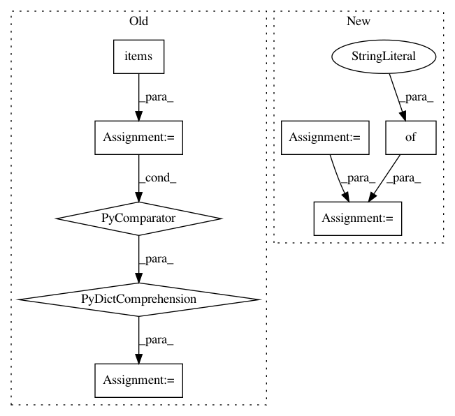

1f720ee453871b2ab764f608926281716ef7bf81,tools/train_pl.py,LitModel,training_step,#LitModel#Any#Any#,88
Before Change
model_out = self.lw_model(fc_feats, att_feats, labels, masks, att_masks, data["gts"], torch.arange(0, len(data["gts"])), sc_flag, struc_flag)
loss = model_out["loss"]
logger_logs = {k:v.data for k,v in model_out.items() if k != "loss"}
logger_logs["scheduled_sampling_prob"] = self.model.ss_prob
logger_logs["training_loss"] = loss
output = {k:v if k == "loss" else v.data for k,v in model_out.items()}
output["log"] = logger_logs
return output
def validation_step(self, data, batch_idx):
After Change
data_time = self.trainer.profiler.recorded_durations["get_train_batch"][-1]
data_time = torch.tensor(data_time)
logger_logs = model_out.copy()
if struc_flag or sc_flag:
logger_logs["reward"] = model_out["reward"].mean()
logger_logs["reward_var"] = model_out["reward"].var(1).mean()
logger_logs["scheduled_sampling_prob"] = torch.tensor(
self.model.ss_prob)
logger_logs["training_loss"] = loss
logger_logs["data_time"] = data_time
output = {
"loss": loss,
"log": logger_logs,
"progress_bar": {"data_time": data_time}
}
return output
def validation_step(self, data, batch_idx):
In pattern: SUPERPATTERN
Frequency: 5
Non-data size: 8
Instances
Project Name: ruotianluo/ImageCaptioning.pytorch
Commit Name: 1f720ee453871b2ab764f608926281716ef7bf81
Time: 2020-07-05
Author: rluo@ttic.edu
File Name: tools/train_pl.py
Class Name: LitModel
Method Name: training_step
Project Name: rail-berkeley/softlearning
Commit Name: a20838d2fdde4906abea5b8cfe3024ecff7b19d7
Time: 2018-08-10
Author: kristian.hartikainen@gmail.com
File Name: examples/variants.py
Class Name:
Method Name:
Project Name: rail-berkeley/softlearning
Commit Name: 5599ea78bc6ac7aa6133711fc869a2c5863e8c65
Time: 2018-06-18
Author: kristian.hartikainen@gmail.com
File Name: examples/variants.py
Class Name:
Method Name:
Project Name: theislab/scanpy
Commit Name: 94ec55bd5c13d75a590f82d41ff66e422bc11b1d
Time: 2017-02-20
Author: f.alex.wolf@gmx.de
File Name: scanpy/tools/tsne.py
Class Name:
Method Name: tsne